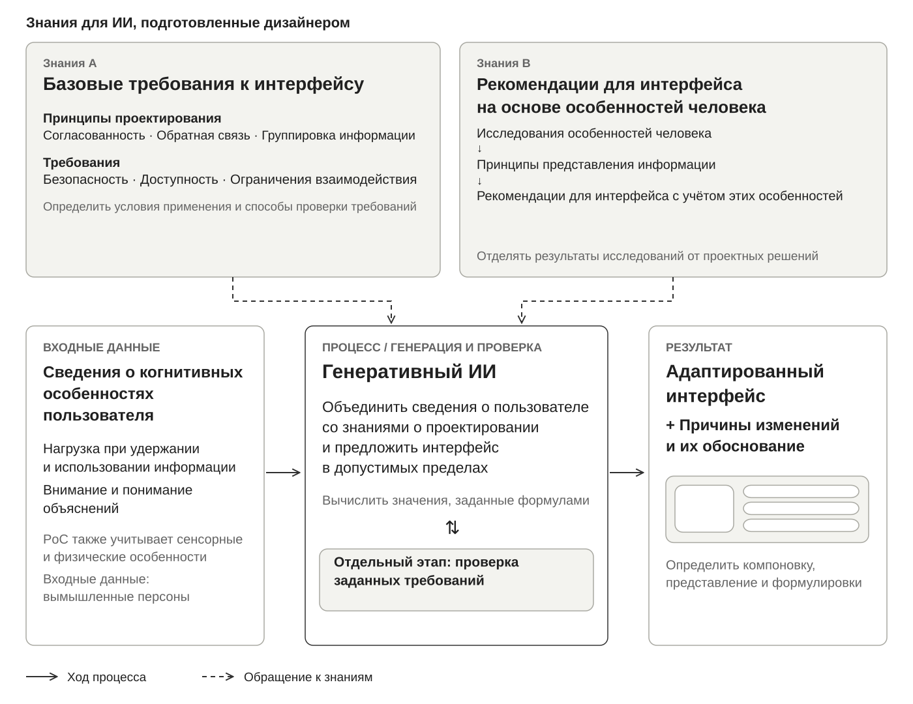
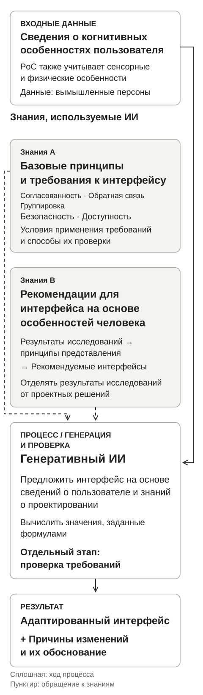
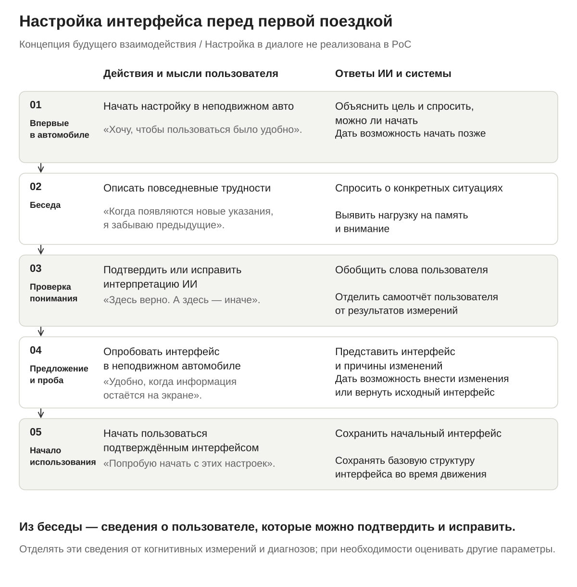
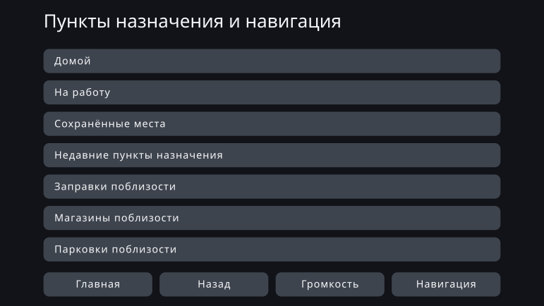
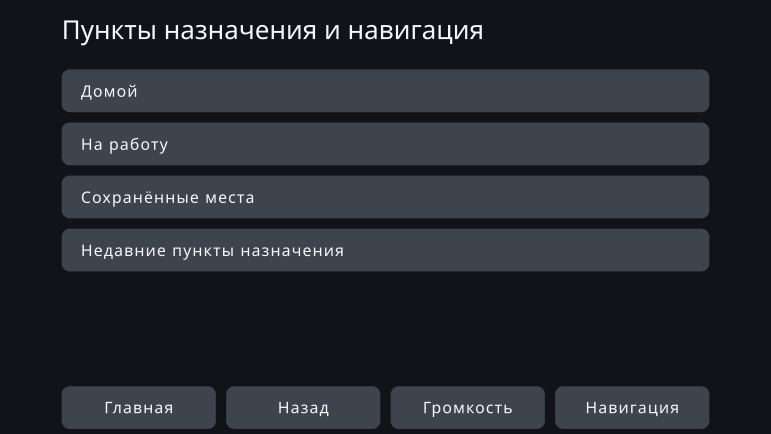
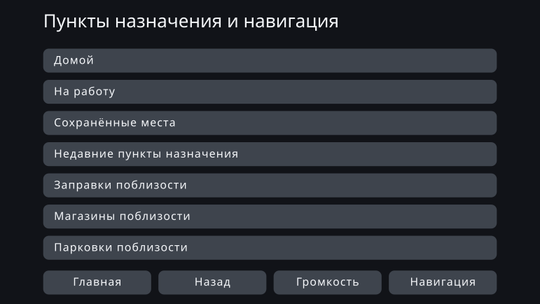

Персонализация интерфейсов на основе ограничений
Август 2026
Обзор
В этом проекте предложена система, которая получает сведения о когнитивных особенностях, влияющих на использование интерфейса, и генерирует интерфейс под конкретного человека. Она объединяет принципы проектирования интерфейсов, требования безопасности и доступности и исследования человеческих особенностей.
Я использовал подход, который называю проектированием на основе ограничений: человек определяет требования и условия их применения, а генеративный ИИ разрабатывает конкретные предложения в этих границах. На примере автомобильной навигации я создал экспериментальный прототип, генерирующий интерфейсы для 13 вымышленных персон с учётом в том числе сенсорных и физических особенностей. Соответствие результата требованиям проверяется отдельным шагом.
Сравнение выявило один случай явного изменения компоновки экрана в ответ на физическую особенность; большинство результатов визуально изменились мало. Удобство и безопасность с участием пользователей не проверялись. Работа помогла определить, какие решения можно оставить генеративному ИИ и какие требования сужают возможности персонализации.
Предпосылки: сколько разных потребностей может учесть один интерфейс?
Большинство продуктов предлагает общий интерфейс, рассчитанный на максимально широкий круг людей. Но люди различаются по объёму информации, который могут обработать одновременно, способности направлять внимание, пониманию формулировок и точности работы с небольшими элементами управления. Даже интерфейс, учитывающий потребности многих, может плохо подходить конкретному человеку.
У оценки на уровне группы тоже есть ограничения. Например, добровольные рекомендации NHTSA 2013 года требуют, чтобы каждый критерий приемлемости по отведению взгляда выполнялся как минимум у 21 из 24 участников. Это не означает, что все смогут пользоваться интерфейсом одинаково хорошо. [1]
Даже там, где размер шрифта или объём отображаемого можно менять, человек должен заметить, что настройка существует, связать её с собственным затруднением и выбрать нужную регулировку. Не остаются ли такие настройки невостребованными, а люди — с интерфейсом, который им не подходит? С этого вопроса всё и началось.
В автомобильной навигации взгляд на экран и работа с ним конкурируют с вниманием, необходимым для вождения. [1] Если неподходящий интерфейс увеличивает эту нагрузку, стоит исследовать, может ли интерфейс, подобранный с самого начала, поддержать и удобство, и безопасность.
Генеративный ИИ позволил создать прототип процесса, который преобразует персональные сведения и знания о дизайне в интерфейс. Я исследовал, можно ли таким образом сократить объём ручной работы по проектированию отдельного интерфейса для каждого человека.
Насколько такие настройки в действительности используются и как несоответствие интерфейса сказывается на аварийности, в этом проекте не проверялось.
Предложение — связать персональные сведения с двумя видами проектных знаний
Система получает сведения о когнитивных особенностях, значимых для использования интерфейса. В этом экспериментальном прототипе использовались вымышленные персоны, включавшие также сенсорные и физические особенности. ИИ рассматривает эти сведения вместе с двумя заранее подготовленными наборами знаний: базовыми правилами проектирования интерфейса и знаниями, связывающими особенности человека с рекомендуемыми решениями интерфейса.
ИИ генерирует интерфейс в допустимых границах, а отдельная проверка оценивает соответствие требованиям. Результат включает персонализированный интерфейс и объяснение того, что и почему изменилось.


Вход: сведения о человеке
На вход подаются сведения о том, насколько легко человеку удерживать и использовать информацию, насколько сильно посторонние стимулы отвлекают его и какие объяснения ему понятнее. Реализация также учитывает зрение и точность движений рук. Интерфейс строится на основе сведений, значимых для взаимодействия с ним, а не одного лишь диагноза.
Знания A: базовые требования к интерфейсу
Собираются базовые принципы проектирования: согласованность, отклик на действия, группировка информации, читаемость текста и различимость элементов управления. К ним добавляются ограничения на работу с бортовым интерфейсом и требования доступности — вместе с ситуациями, в которых они действуют.
Знания B: связь особенностей человека с рекомендуемыми интерфейсами
Этот набор связывает исследования человеческих особенностей с принципами представления информации, а затем с проектированием интерфейса. Например, трудности с удержанием информации в памяти при выполнении задачи указывают на необходимость снизить нагрузку на память. Одним из решений может стать сохранение необходимых сведений на экране.
Результаты исследований не обязательно дают конкретные проектные значения для автомобильной навигации. Я отделяю установленные исследованиями факты от проектных решений, которые вывожу на их основе. Улучшения, полезные всем, включаются в базовые правила, а не считаются результатом персонализации.
Предложенный сценарий: подобрать интерфейс до первой поездки
Концепция на будущее: настройка через разговор в этом экспериментальном прототипе не реализована.
Представьте, что вы впервые садитесь за руль нового автомобиля. Пока автомобиль стоит, ИИ-агент расспрашивает о вашем обычном опыте. Вместо поиска технических настроек вы рассказываете, что вызывает трудности и что вам удобно.

-
До первой поездки: начать разговор
ИИ: «Чтобы подобрать экран под вас, расскажите немного о том, как вы обычно пользуетесь интерфейсами. Если удобнее, это можно сделать позже».
Человек понимает цель и выбирает, начать сейчас или позже.
-
Расспрос: рассказать о затруднениях
ИИ: «Когда навигационные подсказки идут одна за другой, за чем становится трудно уследить?»
Пользователь: «Когда приходит следующая подсказка, я иногда забываю, что было в предыдущей».
ИИ расспрашивает о конкретных ситуациях и упорядочивает затруднения, связанные с удержанием информации и распределением внимания.
-
Сверка понимания: человек может поправить то, как его понял ИИ
ИИ: «Похоже, вам было бы удобнее видеть нужные сведения на экране, чем запоминать последовательность шагов. Я правильно понял?»
Человек подтверждает или поправляет это понимание. Сказанное в разговоре о себе отделяется от измерений когнитивных функций и от диагнозов; там, где нужно измерение, предусмотрен отдельный способ проверки.
-
Предложение и проба: услышать причину, попробовать экран
ИИ: «Чтобы меньше приходилось запоминать, предлагаю экран, на котором видны и текущее действие, и следующий шаг».
На стоянке человек пробует, например, выбрать пункт назначения. Он может сказать «раньше было понятнее» или «здесь я бы изменил формулировку», и предложение можно поправить или вернуть исходный интерфейс.
-
Начало использования: работать с подтверждённым интерфейсом
Подтверждённый человеком интерфейс сохраняется как исходное состояние. В движении базовая структура, к которой он привык, остаётся неизменной. Захочется пересмотреть — можно донастроить на стоянке.
Разговор должен помочь выбрать подходящую начальную конфигурацию через обмен, в котором пользователь может объяснить свои потребности и исправить недопонимание. Его цель — не раз и навсегда отнести человека к определённой категории.
Реализация — отделить обязательные условия от решений, оставленных ИИ
Я реализовал процесс от получения сведений об особенностях человека до генерации, проверки, отрисовки и сравнения интерфейсов. Вместо разговорного интервью на вход подавались 13 вымышленных персон с разными особенностями.
Я выбрал автомобильную навигацию, поскольку она даёт конкретные требования для работы: площадь экрана, размер областей касания, объём отображаемой информации и допустимые действия во время вождения.
Подход на основе ограничений
В этом проекте подход на основе ограничений означает, что человек определяет требования и условия их применения, а ИИ предлагает решения в этих границах.
Параметрический подход на основе правил заранее задаёт, какое значение или вариант соответствует каждому входу. Здесь я определил допустимые диапазоны и основания каждого решения, оставив генеративному ИИ выбор незафиксированных значений и формулировок. Реализация сочетает расчётные значения и решения, сгенерированные ИИ.
| Что устанавливают данные исследований | Как это реализовано |
|---|---|
| Установлено конкретное значение или математическая зависимость | Рассчитать значение в пределах проверенных условий и области применения |
| Известно направление изменения, но не его величина | Выбрать значение, согласующееся с направлением и ограничениями, и зафиксировать его как непроверенное проектное решение |
| Данные не позволяют определить подходящий вариант | Рассматривать результат как исследовательское предложение, требующее оценки |
Всякий раз, когда исследовательский вывод переносился в интерфейс, фиксировались источник, условия применения и проектное решение. Поскольку причины выдаются вместе с интерфейсом, можно проследить, почему для этого человека получился именно такой экран.
Проверка сгенерированного интерфейса отдельным шагом
Интерфейс генерируется как структурированные данные об элементах экрана и их расположении, а затем отрисовывается по этим данным. Числовые и структурные требования проверяет код. Отдельная проверка с помощью большой языковой модели (LLM) оценивает некоторые требования, связанные с интерпретацией смысла. Система также фиксирует пункты вне области автоматических проверок и те, которые невозможно проверить из-за отсутствия информации.
Эти проверки устанавливают, соответствует ли результат заданным требованиям. Чтобы определить, стал ли интерфейс удобнее или безопаснее, нужна оценка с участием пользователей.
Если в ходе проектирования обнаруживаются противоречивые требования, ИИ указывает на них, а человек решает, как их пересмотреть. ИИ не меняет требования самостоятельно при каждой генерации интерфейса.
Сравнение интерфейсов: заметное изменение компоновки и почти неизменный экран
Для сравнения используется общий интерфейс по умолчанию, сгенерированный без сведений о персональных особенностях. Я сравнил его с интерфейсами, сгенерированными на основе таких сведений, при одинаковом наборе функций.
Изображения ниже — результаты работы прототипа, а не серийная навигационная система до и после доработки. Вымышленные персоны использованы как входные данные для исследования влияния отдельных особенностей; они не представляют реальных пользователей.
Случай, когда элементы управления стали крупнее
PS-12 — персона с физической особенностью, затрудняющей точные касания
Возраст, когнитивные и сенсорные особенности совпадают с эталоном PS-01; изменена только моторика пальцев. На приведённых изображениях каждый элемент управления стал крупнее, а число пунктов по центру экрана снизилось с семи до четырёх. Закреплённые кнопки внизу в это число не входят.
Общий интерфейс по умолчанию


Интерфейс, сгенерированный по персональным особенностям


У укрупнения элементов есть цена: на одном экране за раз можно выбрать меньше пунктов. Набор функций по замыслу сохраняется, но по одному этому экрану нельзя судить, насколько легко переходить к следующим.
Случай, когда компоновка почти не изменилась
PS-01 — персона, заданная как эталон
В размере шрифта есть небольшие различия, но число пунктов, расположение и величина областей касания почти те же. При этом сочетании правил и входа не получилось результата, сильно меняющего компоновку по сравнению с общим интерфейсом по умолчанию.
Общий интерфейс по умолчанию

Интерфейс, сгенерированный по персональным особенностям


Результаты и обсуждение: сколько свободы осталось для генерации?
Дополнительная ценность генеративного ИИ остаётся недоказанной
При визуальном сравнении PS-12 оказался единственным результатом с явно отличающейся компоновкой экрана. Другие результаты различались формулировками и настройками, но их внешний вид не позволял выявить существенную разницу в ценности.
Изменений в PS-12 можно добиться и настройками размера отображения и объёма информации. Возможность сразу получить подходящий интерфейс, не разыскивая эти настройки самостоятельно, может быть полезной. Ценность такого сценария нужно оценивать отдельно от того, необходим ли генеративный ИИ для создания интерфейса.
Этот экспериментальный прототип не показал, что адаптация интерфейса к когнитивным особенностям улучшает выполнение задач или что генеративный ИИ создаёт интерфейс лучше, чем подход на основе правил.
Построенное здесь пространство проектирования оказалось узким
Как только обеспечены необходимые размеры текста и элементов управления и применены условия по площади экрана и объёму отображаемого, доступных компоновок остаётся немного. В реализации многое к тому же определялось расчётом или фиксированными структурами, так что у ИИ оставалось мало простора для выбора между несколькими обоснованными вариантами.
В формулировках оставалась гибкость, но эти различия менее заметны, чем изменения компоновки, и визуальная оценка не могла полностью отразить их ценность. Я пришёл к выводу, что для оценки генеративного ИИ нужен набор допустимых предложений, различия между которыми значимы для пользовательского опыта.
Этот результат относится к собранным здесь правилам, принятым параметрам интерфейса и реализованному диапазону выразительных средств. Это не предел автомобильной навигации вообще и не предел индивидуализированных интерфейсов вообще.
Кроме того, я не сверялся напрямую с полным текстом всех соответствующих стандартов — JIS, ISO и прочих. Проектные знания собирались из доступного материала: статей, официальных руководств, открытых данных, а также текста или предпросмотра части стандартов. Охват источников мог повлиять на то, какие проектные варианты оказались доступны. Расширит ли внимательное чтение текстов стандартов эту свободу или, наоборот, сузит её дополнительными условиями, ещё предстоит выяснить.
Работа с ИИ улучшила сами правила
Другим результатом стал сам процесс определения требований к генерации и превращения их в проверяемые условия.
| Найденная проблема | Проектное решение |
|---|---|
| У одного элемента было несколько нижних границ, но было неясно, как их сочетать | Уточнено совместное применение границ, чтобы ни одна из них не нарушалась |
| Требование, предназначенное только для движения, применялось и к неподвижному автомобилю | Для каждого требования указано, действует ли оно во время движения или стоянки |
| Сложность формулировок и наличие пиктограмм были объединены в один проектный параметр | Они разделены на независимые параметры, что вернуло необоснованно исключённые варианты |
| ИИ использовал требования, не относящиеся к генерируемому результату | Для каждого результата указано, какие требования следует учитывать |
| Решения, которые планировалось оставить ИИ, были заранее зафиксированы в реализации | Пересмотрено распределение ответственности между спецификацией и реализацией |
ИИ выявлял проблемы, я оценивал их, а решения отражались в проекте. Такой итеративный процесс прояснил, какие требования должны применяться ко всем и где возможна персонализация.
Дальнейшие шаги: оценить персонализацию и роль генеративного ИИ
Дальше хотелось бы проверить два вопроса по отдельности.
Во-первых, насколько ценен сценарий, в котором пользователь получает подходящий начальный интерфейс без самостоятельной настройки? Для этого необходимо реализовать разговорное интервью, возможность исправлять понимание ИИ и пробу интерфейса, а затем оценить надёжность входных данных и нагрузку на пользователя.
Во-вторых, в каких задачах проектирования различия между предложениями ИИ могут улучшить пользовательский опыт? Я хочу исследовать задачи, где требования оставляют несколько допустимых вариантов организации информации и последовательности взаимодействий.
В исследовании с реальными пользователями можно сравнить на одной задаче три интерфейса: общий по умолчанию, адаптированный по персональным сведениям на основе правил и сгенерированный ИИ. Время выполнения, ошибки, отведение взгляда и субъективная нагрузка помогут отделить эффект персонализации от эффекта использования генеративного ИИ.
Я также планирую подробнее изучить соответствующие стандарты и уточнить различие между исследовательскими данными и проектными решениями. Помимо проверяемости требований, следующая задача — сохранить в их границах варианты, различия между которыми значимы для пользователей.
Источники
- NHTSA, Visual-Manual NHTSA Driver Distraction Guidelines for In-Vehicle Electronic Devices (опубликовано в 2013 году). Это добровольные рекомендации. Критерии приемлемости по отведению взгляда приведены в разделе VI.E, а вопросы внимания и риска рассматриваются в разделе I.C и других разделах. Это не означает, что соответствие экспериментального прототипа данному испытанию было сертифицировано. Читать документ в Federal Register